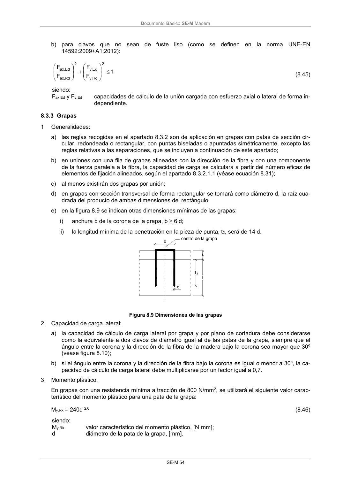

DB-SE-M Madera · edición 2019-12-20 · capa oficial
Documento DB-SE-M-oficial · SHA-256 del PDF 26b5819839ebfda78b0b119c5e76a0a37773b0d763c05688541870075df93718
Página física 60 de 132.
Copia fiel del PDF fuente · Fuente oficial
Ficha de la disposición en la fuente oficial
Formato: Texto de la página (Markdown)
Documento Básico SE-M Madera SE-M 54 b) para clavos que no sean de fuste liso (como se definen en la norma UNE-EN 14592:2009+A1:2012): 1 F F F F 2 Rd ,v Ed ,v 2 Rd , ax Ed , ax (8.45) siendo: Fax,Ed y Fv,Ed capacidades de cálculo de la unión cargada con esfuerzo axial o lateral de forma in- dependiente. 8.3.3 Grapas 1 Generalidades: a) las reglas recogidas en el apartado 8.3.2 son de aplicación en grapas con patas de sección cir- cular, redondeada o rectangular, con puntas biseladas o apuntadas simétricamente, excepto las reglas relativas a las separaciones, que se incluyen a continuación de este apartado; b) en uniones con una fila de grapas alineadas con la dirección de la fibra y con una componente de la fuerza paralela a la fibra, la capacidad de carga se calculará a partir del número eficaz de elementos de fijación alineados, según el apartado 8.3.2.1.1 (véase ecuación 8.31); c) al menos existirán dos grapas por unión; d) en grapas con sección transversal de forma rectangular se tomará como diámetro d, la raíz cua- drada del producto de ambas dimensiones del rectángulo; e) en la figura 8.9 se indican otras dimensiones mínimas de las grapas: i) anchura b de la corona de la grapa, b 6d; ii) la longitud mínima de la penetración en la pieza de punta, t2, será de 14d. Figura 8.9 Dimensiones de las grapas 2 Capacidad de carga lateral: a) la capacidad de cálculo de carga lateral por grapa y por plano de cortadura debe considerarse como la equivalente a dos clavos de diámetro igual al de las patas de la grapa, siempre que el ángulo entre la corona y la dirección de la fibra de la madera bajo la corona sea mayor que 30º (véase figura 8.10); b) si el ángulo entre la corona y la dirección de la fibra bajo la corona es igual o menor a 30º, la ca- pacidad de cálculo de carga lateral debe multiplicarse por un factor igual a 0,7. 3 Momento plástico. En grapas con una resistencia mínima a tracción de 800 N/mm2, se utilizará el siguiente valor carac- terístico del momento plástico para una pata de la grapa: My,Rk = 240d 2,6 (8.46) siendo: My,Rk valor característico del momento plástico, [N·mm]; d diámetro de la pata de la grapa, [mm].
